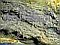
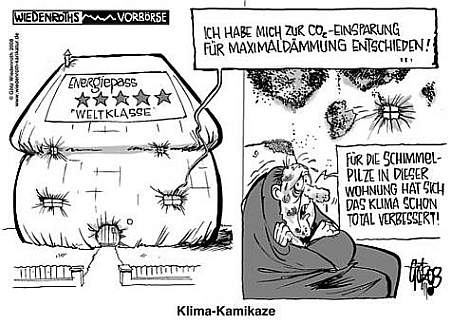
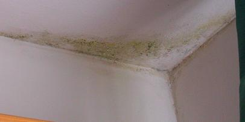
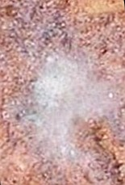
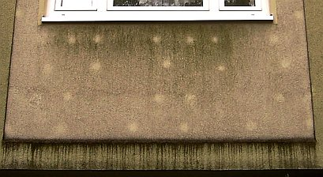
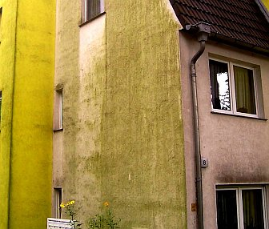
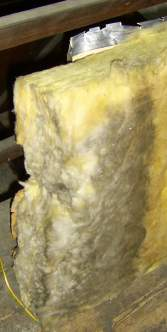
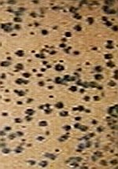
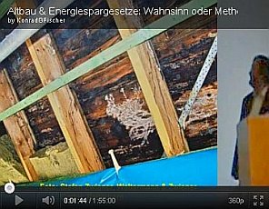
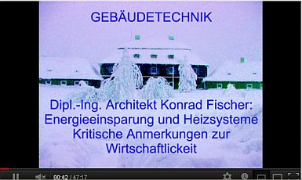

Wärmedämmung? Feuchte/Salz?
Feuchte/Salz?
 Fenster schwitzen?
Fenster schwitzen?
 Schimmelpilz wuchert?
Schimmelpilz wuchert?
"Das Wahre und Echte würde leichter in der Welt Raum gewinnen,
wenn nicht die, die unfähig sind, es hervorzubringen,
zugleich verschworen wären,
es nicht aufkommen zu lassen."
(Arthur Schopenhauer, in: "Die Welt als Wille und Vorstellung")
Friedrich Schiller: Der Brodgelehrte - ein wahrheitstreues Bild der Wissenschaft.
"Hab nur den Mut,
die Meinung frei zu sagen
und ungestört!
Es wird den Zweifel
in die Seele tragen, dem,
der es hört.
Und vor der Lust des Zweifels
flieht der Wahn.
Du glaubst nicht,
was ein Wort oft wirken kann."
Johann Wolfgang von Goethe
 Was Sie hier geboten bekommen, ist jedenfalls eine
unverblümte und kritische Darstellung rund um die Heiztechnik. Dabei gehen wir hier vorzugsweise vom Heizbedarf für "normale"
Gebäude, egal ob für Wohnen, Gewerbe, Museum oder andere Nutzungen aus. Das Heizen von Baustellen, das wärmetechnische
Trocknen von Baustellen oder Wasserhavarien in Gebäuden - ist hier weniger gemeint. Dafür können Sie - soweit erforderlich -
Heizgeräte mieten und den zeitlich begrenzten Heizbedarf ebenso wie
zusätzlichen Wärmebedarf mit mobilen Heizsystemen befriedigen. Ein weiterer heiztechnisch relevanter Themenschwerpunkt dieser
Seiten ist aber logischerweise das verordnete Energiesparen - inkl. einer von unserer Klimaschutzdiktatur im EEWärmeG schon
aufschreilos durchgesetzten und in den schon im Schreibtisch vorliegenden Folgegesetzen verschärften Grundgesetzaushebelung
(§ 13: Unverletzlichkeit Wohnung) und Bußgelder
unfaßbarer Höhe. Außerdem geht es hier rund um all die Vor- und Nachteile der unendlich herrlich modernen Techniksysteme,
die Ihnen die Industrie, das Handwerk und die Planer empfehlen oder gar mit brutalstem Werbeschnulli und abgefeimten Drohgebärden
aufdrängen. Ja, Ihr geliebter und verehrter Heizungsgott / Heizungspapst / Heizexperte / Heizi / Energieberater oder gar Sonnengott
ist vielleicht auch dabei und in Wahrheit sogar ein gar schwefeliger Ökoteufel?
Was Sie hier geboten bekommen, ist jedenfalls eine
unverblümte und kritische Darstellung rund um die Heiztechnik. Dabei gehen wir hier vorzugsweise vom Heizbedarf für "normale"
Gebäude, egal ob für Wohnen, Gewerbe, Museum oder andere Nutzungen aus. Das Heizen von Baustellen, das wärmetechnische
Trocknen von Baustellen oder Wasserhavarien in Gebäuden - ist hier weniger gemeint. Dafür können Sie - soweit erforderlich -
Heizgeräte mieten und den zeitlich begrenzten Heizbedarf ebenso wie
zusätzlichen Wärmebedarf mit mobilen Heizsystemen befriedigen. Ein weiterer heiztechnisch relevanter Themenschwerpunkt dieser
Seiten ist aber logischerweise das verordnete Energiesparen - inkl. einer von unserer Klimaschutzdiktatur im EEWärmeG schon
aufschreilos durchgesetzten und in den schon im Schreibtisch vorliegenden Folgegesetzen verschärften Grundgesetzaushebelung
(§ 13: Unverletzlichkeit Wohnung) und Bußgelder
unfaßbarer Höhe. Außerdem geht es hier rund um all die Vor- und Nachteile der unendlich herrlich modernen Techniksysteme,
die Ihnen die Industrie, das Handwerk und die Planer empfehlen oder gar mit brutalstem Werbeschnulli und abgefeimten Drohgebärden
aufdrängen. Ja, Ihr geliebter und verehrter Heizungsgott / Heizungspapst / Heizexperte / Heizi / Energieberater oder gar Sonnengott
ist vielleicht auch dabei und in Wahrheit sogar ein gar schwefeliger Ökoteufel?Wer nun über die allseits mittels Klimaapokalyptik beschworene Energieeinsparung ein
bißchen nachdenkt, wird möglicherweise schnell darauf kommen: Absaufende Dämmstoffe oder
aufgeschäumte Baustoffperversionen aus "Ziegelstein",
subventionsbedürftige Schwindelenergieerzeugung aus Wind und Sonne, die mehr Energie
schluckt als erzeugt, können Heizenergie so gut wie gar nicht nicht richtig einsparen.
Das kann geradezu selbstverständlich, vornehmlich und vorzugsweise nur die Heiztechnik selbst. Und haben Sie
eigentlich die Folgen des falschen Energiesparbemühens bedacht?











|
Anfragen und Antworten zu Bauproblemen, auch zur Hüllflächentemperierung |
Das Baudenkmal - Nutzung und Unterhalt
Mit aktuellen Fachaufsätzen und Projektbeispielen zur Strahlungsheizung/Temperierung. Schriftenreihe B der Deutschen Burgenvereinigung e.V., Hrsg. Konrad Fischer |